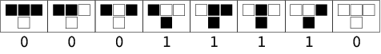

Wolfram's 256 Rules (一维元胞自动机)
Here i'd like to introduce the simplest one-dimensional cellular automaton. Each cell has two possible values (0 or 1), and its state at the next time step is fully decided by its two neighbors.
Since there are 8 possible binary states for the three cells neighboring a given cell, there are a total of 256 rules, each of which can be indexed with an 8-bit binary number. The following figure gives an example of rule 30 (00011110)2.

Here we use p5js to fulfill an example. You may also find a matlab version here.